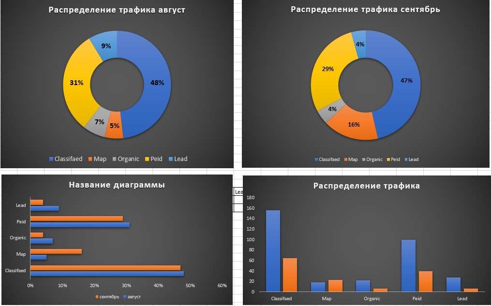
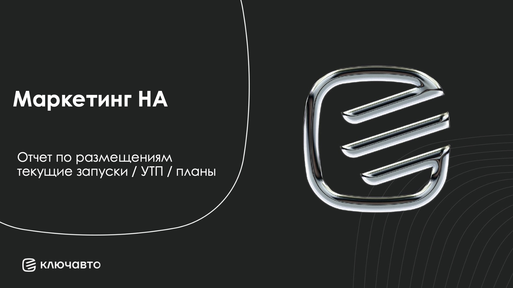
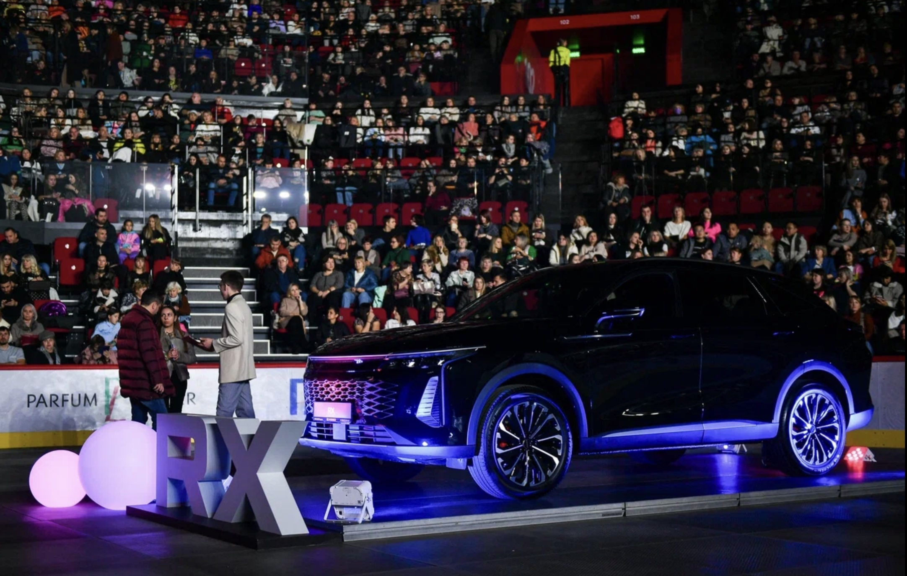
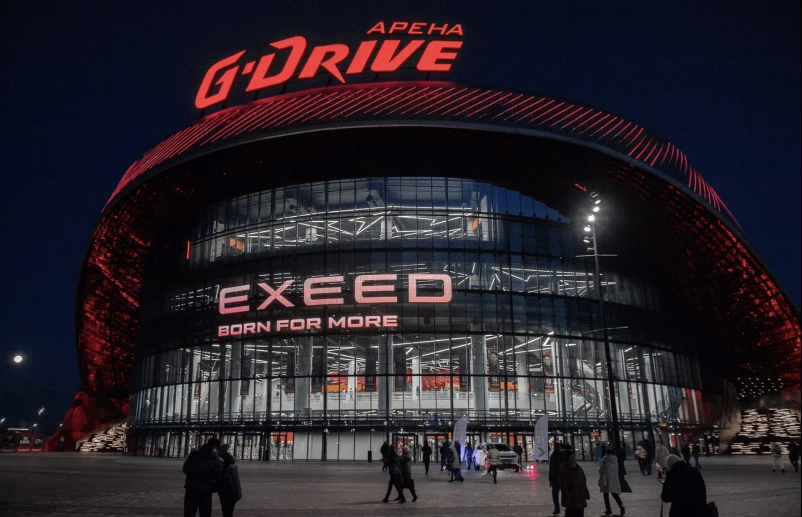

ЗАДАЧА 01
Медиапланирование и бюджеты
Формирование медиапланов по брендам, распределение бюджетов и согласование дополнительных расходов на лидогенерацию.
Мультибрендовый маркетинг, управление бюджетами, развитие трафика и создание брендовых проектов в пяти городах Сибири.
В моей зоне ответственности находились дилерские центры в Омске, Новосибирске, Тюмени, Перми и Екатеринбурге. Я координировала маркетинговую активность, медиапланирование, распределение бюджетов и работу подрядчиков, контролируя связь рекламы с трафиком, обращениями и коммерческими задачами бизнеса.
Омск, Новосибирск, Тюмень, Пермь, Екатеринбург.




Региональная работа требовала одновременно учитывать особенности городов, задачи дилерских центров, требования импортеров и коммерческие приоритеты брендов. В портфеле находились GEELY, BELGEE, CHERY, EXEED, JETOUR, OMODA, JAECOO, Kai, BAIC и мультибрендовое направление.
Формирование медиапланов по брендам, распределение бюджетов и согласование дополнительных расходов на лидогенерацию.
Ежедневные отчеты по трафику и размещениям, работа с качеством обращений и складским предложением.
Нестандартные интеграции, VIP-мероприятия и запуск нового дилерского центра CHERY.
Я самостоятельно координировала интеграцию EXEED в тур Полины Гагариной в Омске. В результате удалось разместить автомобиль непосредственно внутри концертного зала, практически рядом со сценой. Дополнительно я добилась бесплатного размещения рекламного ролика EXEED на большом экране (при заявленной стоимости около 2 млн рублей).
VIP-мероприятие в Омской филармонии в рамках концерта симфонического оркестра. Концепция объединяла автомобильный бренд с культурным событием. В программу вошли концерт, фуршет, подарки, тест-драйв и специальные условия на покупку EXEED RX.
Участие в маркетинговом обеспечении открытия нового дилерского центра. Проект сопровождался вложениями около 32 млн рублей в оформление и идентификацию объекта в соответствии с требованиями импортера.
Я использовала данные о рынке, клиентском опыте и рекламной активности, чтобы выявлять возможности для развития брендов и готовить обоснованные рекомендации для бизнеса.
Анализ отзывов и обратной связи, выявление повторяющихся проблем и определение этапов клиентского пути, требующих внимания.
Изучение конкурентной среды, позиционирования брендов и возможностей развития в региональном контексте.
Подготовка аналитических материалов, структурирование результатов и формирование предложений для руководителей и участников проектов.
Сбор информации из CRM, отчетов и обратной связи
Поиск закономерностей и точек роста
Формулирование гипотез и рекомендаций
План действий и корректировка бюджета
Визуализации на этой странице демонстрируют аналитический подход и не содержат внутренних показателей компании.
Управление 9+ брендами в параллель без смешения аудиторий.
Единая маркетинговая система для дилерских центров в Сибири.
От digital и классифайдов до крупных культурных событий.
Результатом аналитической работы становились структурированные выводы, выявленные проблемные зоны и рекомендации, которые помогали определять приоритеты маркетинговой активности.
Я отвечала за комплекс маркетинговых задач в направлении новых автомобилей: медиапланирование, распределение бюджетов, разработку акций, контроль трафика и обработки обращений.
Мой подход - соединять брендовые задачи с коммерческими приоритетами бизнеса, управлять процессами на основе данных и находить нестандартные решения, которые помогают бренду выделяться на рынке.
Медиапланы, УТП, распределение бюджета на лидогенерацию.
Интеграции, VIP-мероприятия, открытие дилерских центров.
Контроль трафика, качество обращений, координация подрядчиков.